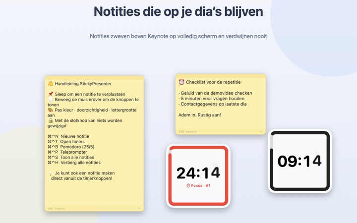
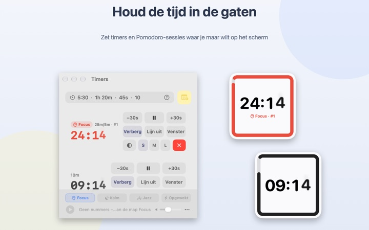
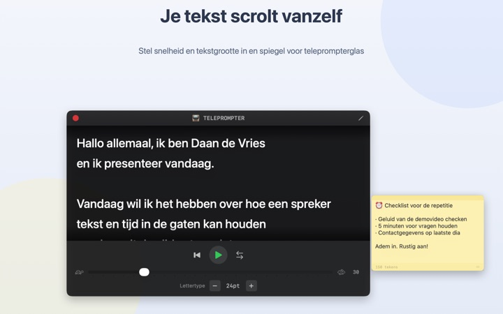
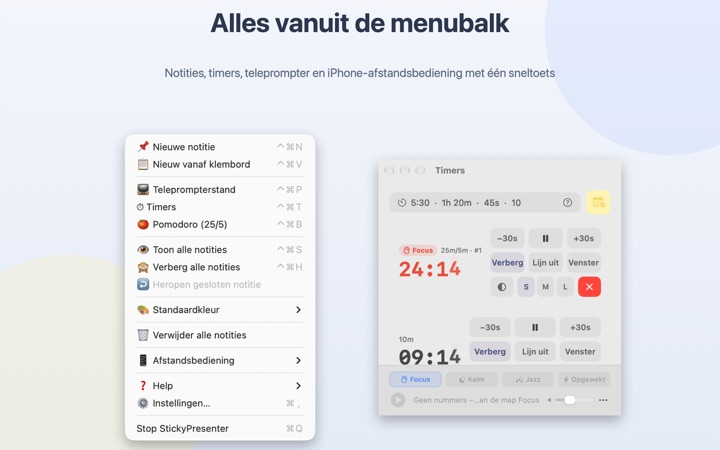

Je tekst en je tijd,
recht op de dia
Zet Keynote op volledig scherm en je notities en timer blijven erbovenop staan. Ze pakken nooit de focus van de presentatie-app af, dus je clicker bladert gewoon door de dia’s.
Alle functies zijn gratis. Vereist macOS 14 of nieuwer.

Probeer het op een dia
Typ een tijd zoals je dat in de app zou doen. Tik op 15s en zie hoe de widget je waarschuwt als de tijd bijna om is.
Waar laat je je tekst en de klok tijdens een presentatie?
De presentatorweergave vraagt om een tweede scherm, en een blik op je horloge ziet het publiek altijd. Misschien heb je weleens een papiertje op je laptop geplakt dat er daarna af viel. StickyPresenter zet je tekst en de resterende tijd recht boven de dia, waar je toch al kijkt.
Eén blik en je weet hoeveel tijd je nog hebt
Een vierkante widget in de hoek toont de resterende tijd. Hij kleurt rood als het einde nadert en als de tijd om is, klinkt er een signaal en knippert de rand.
Typ tijden zoals het je uitkomt, bijvoorbeeld 5:30 of 1h 20m, of 25/5 voor een pomodoro die wisselt tussen focus en pauze. Open een timer in een eigen venster om bij schermdeling of AirPlay alleen dat venster te delen.

Lees je tekst en kijk in de camera
De teleprompter scrolt je tekst op het tempo dat je kiest en stopt vanzelf aan het einde. Kopieer je tekst, druk op ⌘⌃P en hij opent met die tekst.
Er is een spiegelmodus voor teleprompters met spiegelglas, en tempo en lettergrootte blijven bewaard voor de volgende keer.

Je verlaat de dia niet
De app draait onopvallend in de menubalk, zonder Dock-symbool en zonder vensters om bij te houden. Sneltoetsen als ⌘⌃N voor een nieuwe notitie en ⌘⌃T voor timers werken zelfs in Keynote op volledig scherm.
Op het podium start en pauzeer je de timer met de gratis iPhone-app Remote Controller for Sticky, en schuif je de widget opzij als hij een dia bedekt.

In drie stappen aan de slag
- 1
Open de app
Er verschijnt een notitiesymbool in de menubalk, en de eerste keer opent een korte handleiding.
- 2
Zet een notitie en timer klaar
Kopieer je tekst en druk op
⌘⌃V, typ dan de duur van je praatje in het timerveld. - 3
Ga naar volledig scherm
Notitie en timer blijven bovenop.
Sneltoetsen en tijdnotaties
- ⌘⌃N
- Nieuwe notitie
- ⌘⌃V
- Nieuwe notitie van het klembord
- ⌘⌃T
- Timers tonen of verbergen
- ⌘⌃B
- Pomodoro starten (25 min focus, 5 min pauze)
- ⌘⌃P
- Teleprompter
- ⌘⌃S · ⌘⌃H
- Alle notities tonen of verbergen
- 10
- Alleen een getal betekent minuten (10 min)
- 5:30 · 1:15:00
- Minuten:seconden, uren:minuten:seconden
- 1h 20m · 45s
- Met eenheden
- 25/5
- Focus/pauze, steeds opnieuw tot je stopt
Alle sneltoetsen gebruiken Command (⌘) en Control (⌃) samen en werken ook als je in een andere app zit. Timers gaan tot 99:59:59.
Veelgestelde vragen
Is het echt gratis?
Ja. Alle functies zijn gratis, en de iPhone-app Remote Controller for Sticky is een aparte, gratis app. Heb je er wat aan, dan kun je de ontwikkelaar via Instellingen een fooi geven; daarmee ontgrendel je niets.
Kan ik bij schermdeling of synchrone weergave alleen de timer laten zien?
Ja. Met de knop Venster in de rij van de timer open je hem als gewoon venster. Dan staat hij in de vensterlijst van schermdeling en AirPlay, en kun je alleen dat venster delen.
Ik heb een timerwidget verborgen en kan hem niet meer vinden.
Beweeg in het timervenster de aanwijzer over de rij van die timer, dan wordt de plek van de widget met een stippellijn aangegeven. Klik op Lijn uit om hem terug naast het timervenster te zetten.
Ik heb per ongeluk een notitie gesloten.
Met Heropen gesloten notitie in de menubalk haal je elk van de laatste 20 terug. Notities worden bewaard terwijl je typt en komen op dezelfde plek terug als je de app opnieuw opent.
Een sneltoets werkt niet.
Staat hij in de sneltoetstabel van de handleiding als Gebruikt door een andere app, dan heeft een andere app hem eerder geclaimd. Stop die app en de sneltoets werkt weer. Toegankelijkheidstoestemming is niet nodig.
Waarom vraagt het thema Kameleon om schermopname?
Kameleon leest de kleur van het scherm achter de widget en past zich daarop aan, en daarvoor is die toestemming nodig. Er wordt niets bewaard of verstuurd. Zonder toestemming werken de thema’s Systeem, Licht en Donker gewoon.
Hoe voeg ik achtergrondmuziek toe?
Kies een sfeer (Focus, Kalm, Jazz of Opgewekt) in de muziekbalk onderaan het timervenster, dan maakt de app voor elke sfeer een map. Zet daar je eigen nummers in en ze spelen op volgorde mee met de timer. De app bevat zelf geen muziek.
De afstandsbediening op mijn iPhone vindt mijn Mac niet.
Controleer in deze volgorde: draait StickyPresenter op de Mac (symbool in de menubalk)? Zitten beide apparaten op hetzelfde wifinetwerk en niet op een gastnetwerk of mobiel internet? Is Lokaal netwerk toegestaan onder Privacy en beveiliging op zowel iPhone als Mac? Staat de VPN uit?
De afstandsbediening zegt dat de koppelcode niet klopt.
Voer de viercijferige code in die nu onder Afstandsbediening in de menubalk van de Mac staat. Heb je op Nieuwe koppelcode geklikt, dan geldt alleen de nieuwe. Na de eerste koppeling maakt hij meteen verbinding zodra je de app opent.
Kan iemand anders mijn timer bedienen?
Niet zonder jouw code. De Mac accepteert alleen afstandsbedieningen die de juiste code hebben ingevoerd, via een versleutelde directe verbinding in je lokale netwerk. Heeft iemand de code gezien, kies dan Nieuwe koppelcode of Gekoppelde afstandsbedieningen vergeten onder Afstandsbediening in de menubalk.
Waar worden mijn notities en teksten bewaard?
Alleen op deze Mac. Geen account, geen advertenties, en er gaat niets online behalve anonieme gebruiksstatistieken en feedback die je zelf verstuurt.
Vragen, fouten of ideeën? Mail naar mizzking75@gmail.com.